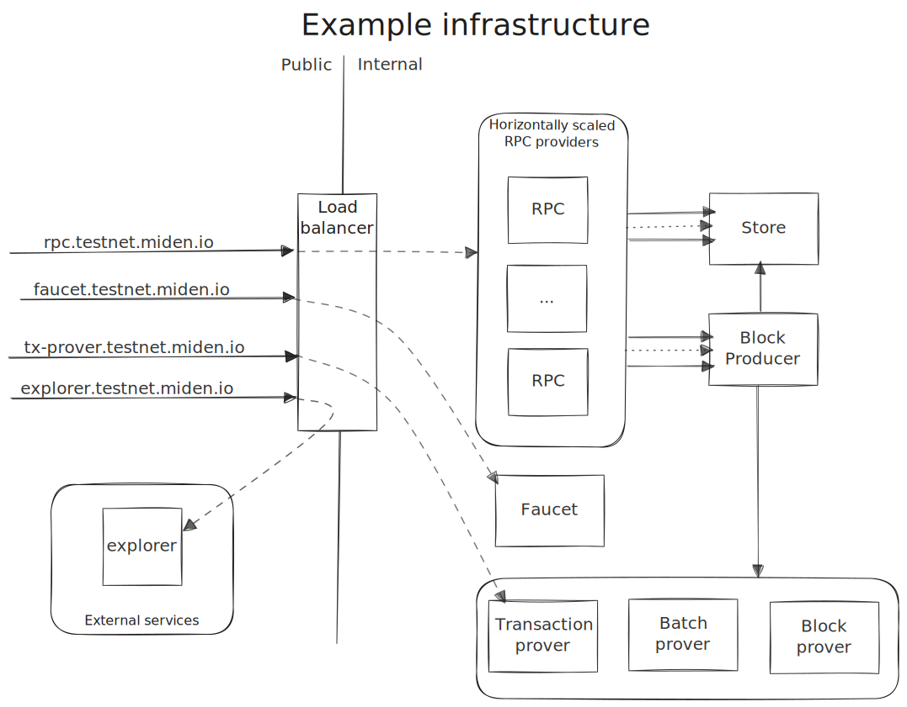
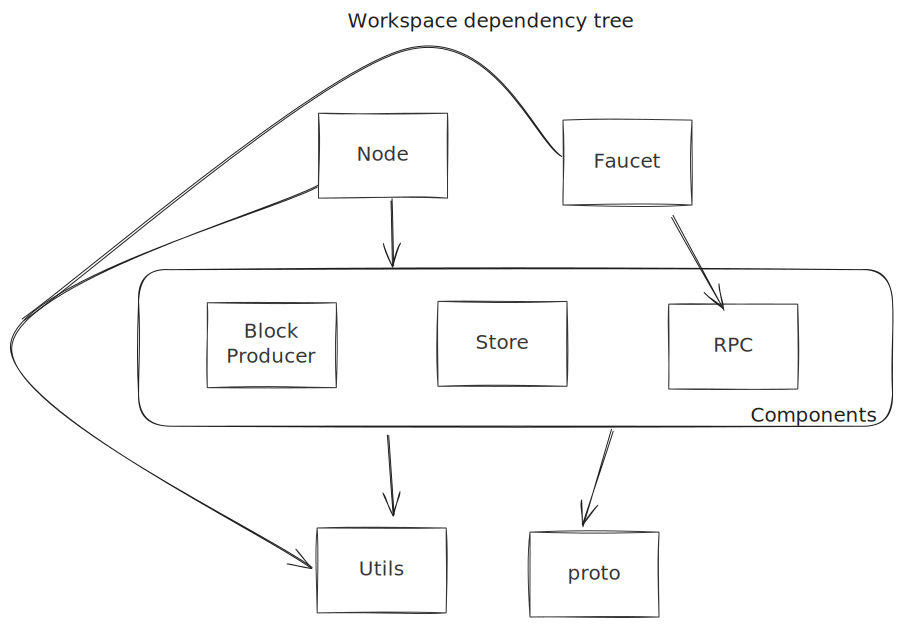

Introduction
Welcome to the Miden node documentation.
This book provides two separate guides aimed at node operators and developers looking to contribute to the node respectively. Each guide is standalone, but developers should also read through the operator guide as it provides some additional context.
At present, the Miden node is the central hub responsible for receiving user transactions and forming them into new blocks for a Miden network. As Miden decentralizes, the node will morph into the official reference implementation(s) of the various components required by a fully p2p network.
Each Miden network therefore has exactly one node receiving transactions and creating blocks. The node provides a gRPC interface for users, dApps, wallets and other clients to submit transactions and query the state.
Feedback
Please report any issues, ask questions or leave feedback in the node repository here.
This includes outdated, misleading, incorrect or just plain confusing information :)
Operator Guide
Welcome to the Miden node operator guide which should cover everything you need to succesfully run and maintain a
Miden node.
You can report any issues, ask questions or leave feedback at our project repo here.
Node architecture
The node itself consists of three distributed components: store, block-producer and RPC. We also provide a reference faucet implementation which we use to distribute testnet and devnet tokens.
The components can be run on separate instances when optimised for performance, but can also be run as a single process for convenience. At the moment both of Miden's public networks (testnet and devnet) are operating in single process mode.
The inter-component communication is done using a gRPC API wnich is assumed trusted. In other words this must not be public. External communication is handled by the RPC component with a separate external-only gRPC API.

RPC
The RPC component provides a public gRPC API with which users can submit transactions and query chain state. Queries are validated and then proxied to the store. Similarly, transaction proofs are verified before submitting them to the block-producer. This takes a non-trivial amount of load off the block-producer.
This is the only external facing component and it essentially acts as a shielding proxy that prevents bad requests from impacting block production.
It can be trivially scaled horizontally e.g. with a load-balancer in front as shown above.
Store
The store is responsible for persisting the chain state. It is effectively a database which holds the current state of the chain, wrapped in a gRPC interface which allows querying this state and submitting new blocks.
It expects that this gRPC interface is only accessible internally i.e. there is an implicit assumption of trust.
Block-producer
The block-producer is responsible for aggregating received transactions into blocks and submitting them to the store.
Transactions are placed in a mempool and are periodically sampled to form batches of transactions. These batches are proved, and then periodically aggregated into a block. This block is then proved and committed to the store.
Proof generation in production is typically outsourced to a remote machine with appropriate resources. For convenience, it is also possible to perform proving in-process. This is useful when running a local node for test purposes.
Faucet
A stand-alone binary which serves a webpage where users can request tokens from a customizable faucet account. The faucet communicates with the node via the RPC component and is not considered special by the node. It is a simple reference implementation of a faucet.
Installation
We provide Debian packages for official releases for both the node software as well as a reference faucet implementation.
Alternatively, both also can be installed from source on most systems using the Rust package manager cargo.
Debian package
Official Debian packages are available under our releases page.
Both amd64 and arm64 packages are available.
Note that the packages include a systemd service which is disabled by default.
To install, download the desired releases .deb package and checksum files. Install using
sudo dpkg -i $package_name.deb
You can (and should) verify the checksum prior to installation using a SHA256 utility. This differs from platform to platform, but on most linux distros:
sha256sum --check $checksum_file.deb.checksum
can be used so long as the checksum file and the package file are in the same folder.
Install using cargo
Install Rust version 1.85 or greater using the official Rust installation instructions.
Depending on the platform, you may need to install additional libraries. For example, on Ubuntu 22.04 the following command ensures that all required libraries are installed.
sudo apt install llvm clang bindgen pkg-config libssl-dev libsqlite3-dev
Install the latest node binary:
cargo install miden-node --locked
This will install the latest official version of the node. You can install a specific version x.y.z using
cargo install miden-node --locked --version x.y.z
You can also use cargo to compile the node from the source code if for some reason you need a specific git revision.
Note that since these aren't official releases we cannot provide much support for any issues you run into, so consider
this for advanced use only. The incantation is a little different as you'll be targeting our repo instead:
# Install from a specific branch
cargo install --locked --git https://github.com/0xPolygonMiden/miden-node miden-node --branch <branch>
# Install a specific tag
cargo install --locked --git https://github.com/0xPolygonMiden/miden-node miden-node --tag <tag>
# Install a specific git revision
cargo install --locked --git https://github.com/0xPolygonMiden/miden-node miden-node --rev <git-sha>
More information on the various cargo install options can be found
here.
Setup
TODO: once configuration has been refactored
Updating
warning
We currently have no backwards compatibility guarantees. This means updating your node is destructive - your existing chain will not work with the new version. This will change as our protocol and database schema mature and settle.
Updating the node to a new version is as simply as re-running the install process and repeating the Setup instructions.
TBD: waiting on CLI rework to be completed.
Monitoring & telemetry
We provide logging to stdout and an optional OpenTelemetry exporter for our traces.
We do not export OpenTelemetry logs or metrics. Our end goal is to derive these based off of our tracing information. This approach is known as wide-events, structured logs, and Observibility 2.0.
What we're exporting are traces which consist of spans (covering a period of time), and events (something happened
at a specific instance in time). These are extremely useful to debug distributed systems - even though miden is still
centralized, the node components are distributed.
OpenTelemetry provides a Span Metrics Converter which can be used to convert our traces into more conventional metrics.
What gets traced
We assign a unique trace (aka root span) to each RPC request, batch build, and block build process.
Span and attribute naming is unstable and should not be relied upon. This also means changes here will not be considered breaking, however we will do our best to document them.
RPC request/response
Not yet implemented.
Block building
This trace covers the building, proving and submission of a block.
Span tree
block_builder.build_block
┝━ block_builder.select_block
│ ┝━ mempool.lock
│ ┕━ mempool.select_block
┝━ block_builder.get_block_inputs
│ ┝━ block_builder.summarize_batches
│ ┕━ store.client.get_block_inputs
│ ┕━ store.rpc/GetBlockInputs
│ ┕━ store.server.get_block_inputs
│ ┝━ validate_nullifiers
│ ┝━ read_account_ids
│ ┝━ validate_notes
│ ┝━ select_block_header_by_block_num
│ ┝━ select_note_inclusion_proofs
│ ┕━ select_block_headers
┝━ block_builder.prove_block
│ ┝━ execute_program
│ ┕━ block_builder.simulate_proving
┝━ block_builder.inject_failure
┕━ block_builder.commit_block
┝━ store.client.apply_block
│ ┕━ store.rpc/ApplyBlock
│ ┕━ store.server.apply_block
│ ┕━ apply_block
│ ┝━ select_block_header_by_block_num
│ ┕━ update_in_memory_structs
┝━ mempool.lock
┕━ mempool.commit_block
┕━ mempool.revert_expired_transactions
┕━ mempool.revert_transactions
Batch building
Not yet implemented.
Verbosity
We log important spans and events at info level or higher, which is also the default log level.
Changing this level should rarely be required - let us know if you're missing information that should be at info.
The available log levels are trace, debug, info (default), warn, error which can be configured using the
RUST_LOG environment variable e.g.
export RUST_LOG=debug
The verbosity can also be specified by component (when running them as a single process):
export RUST_LOG=warn,block-producer=debug,rpc=error
The above would set the general level to warn, and the block-producer and rpc components would be overriden to
debug and error respectively. Though as mentioned, it should be unusual to do this.
Configuration
The OpenTelemetry trace exporter is enabled by adding the --open-telemetry flag to the node's start command:
miden-node start --open-telemetry node
The exporter can be configured using environment variables as specified in the official documents.
Note: we only support gRPC as the export protocol.
Example: Honeycomb configuration
This is based off Honeycomb's OpenTelemetry setup guide.
OTEL_EXPORTER_OTLP_ENDPOINT=https://api.honeycomb.io:443 \
OTEL_EXPORTER_OTLP_HEADERS="x-honeycomb-team=your-api-key" \
miden-node start --open-telemetry node
TODO: honeycomb queries, triggers and board examples.
Versioning
We follow the semver standard for versioning.
The following is considered the node's public API, and will therefore be considered as breaking changes.
- RPC gRPC specification (note that this excludes internal inter-component gRPC schemas).
- Node configuration options.
- Faucet configuration options.
- Database schema changes which cannot be reverted.
- Large protocol and behavioral changes.
We intend to include our OpenTelemetry trace specification in this once it stabilizes.
We will also call out non-breaking behvioral changes in our changelog and release notes.
Developer Guide
Welcome to the developer guide for the miden node :)
This is intended to serve as a basic introduction to the codebase as well as covering relevant concepts and recording architectural decisions.
This is not intended for dApp developers or users of the node, but for development of the node itself.
It is also a good idea to familiarise yourself with the operator manual.
Living documents go stale - the code is the final arbitrator of truth.
If you encounter any outdated, incorrect or misleading information, please open an issue.
Contributing to Miden Node
First off, thanks for taking the time to contribute!
We want to make contributing to this project as easy and transparent as possible.
Before you begin..
Start by commenting your interest in the issue you want to address - this let's us assign the issue to you and prevents multipe people from repeating the same work. This also lets us add any additional information or context you may need.
We use the next branch as our active development branch. This means your work should fork off the next branch (and
not main).
Typos and low-effort contributions
We don't accept PRs for typo fixes as these are often scanned for AI "contributors". If you find typos please open an issue instead.
Commits
Try keep your commit names and messages related to the content. This provides reviewers with context if they need to step through your changes by commit.
This does not need to be perfect because we generally squash merge a PR - the commit naming is therefore only relevant for the review process.
Pre-PR checklist
Before submitting a PR, ensure that you're up to date by rebasing onto next, and that tests and lints pass by running:
# Runs the various lints
make lint
# Runs the test suite
make test
Post-PR
Please don't rebase your branch once the PR has been opened. In other words - only append new commits. This lets reviewers have a consistent view of your changes for follow-up reviews. Reviewers may request a rebase once they're ready in order to merge your changes in.
Any contributions you make will be under the MIT Software License
In short, when you submit code changes, your submissions are understood to be under the same MIT License that covers the project. Feel free to contact the maintainers if that's a concern.
Navigating the codebase
The code is organised using a Rust workspace with seprate crates for the node and faucet binaries, a crate for each node component, a couple of gRPC-related codegen crates, and a catch-all utilities crate.
The primary artifacts are the node and faucet binaries. The library crates are not intended for external usage, but instead simply serve to enforce code organisation and decoupling.
| Crate | Description |
|---|---|
node | The node executable. Configure and run the node and its components. |
faucet | A reference faucet app implementation used by the official Miden faucet. |
block-producer | Block-producer component implementation. |
store | Store component implementation. |
rpc | RPC component implementation. |
proto | Contains and exports all protobuf definitions. |
rpc-proto | Contains the RPC protobuf definitions. Currently this is an awkward clone of proto because we re-use the definitions from the internal protobuf types. |
utils | Variety of utility functionality. |
test-macro | Provides a procedural macro to enable tracing in tests. |
note
miden-base is an important dependency which
contains the core Miden protocol definitions e.g. accounts, notes, transactions etc.

Monitoring
Developer level overview of how we aim to use tracing and open-telemetry to provide monitoring and telemetry for the
node.
Please begin by reading through the monitoring operator guide as this will provide some much needed context.
Approach and philosophy
We want to trace important information such that we can quickly recognise issues (monitoring & alerting) and identify the cause. Conventionally this has been achieved via metrics and logs respectively, however a more modern approach is using wide-events/traces and post-processing these instead. We're using the OpenTelemetry standard for this, however we are only using the trace pillar and avoid metrics and logs.
We wish to emit these traces without compromising on code quality and readibility. This is also a downside to including
metrics - these are usually emitted inline with the code, causing noise and obscuring the business logic. Ideally we
want to rely almost entirely on tracing::#[instrument] to create spans as these live outide the function body.
There are of course exceptions to the rule - usually the root span itself is created manually e.g. a new root span for
each block building iteration. Inner spans should ideally keep to #[instrument] where possible.
Relevant crates
We've attempted to lock most of the OpenTelemetry crates behind our own abstractions in the utils crate. There are a
lot of these crates and it can be difficult to keep them all separate when writing new code. We also hope this will
provide a more consistent result as we build out our monitoring.
tracing is the defacto standard for logging and tracing within the Rust ecosystem. OpenTelemetry has decided to avoid
fracturing the ecosystem and instead attempts to bridge between tracing and the OpenTelemetry standard in-so-far as is
possible. All this to say that there are some rough edges where the two combine - this should improve over time.
| crate | description |
|---|---|
tracing | Emits tracing spans and events. |
tracing-subscriber | Provides the conventional tracing stdout logger (no interaction with OpenTelemetry). |
tracing-forest | Logs span trees to stdout. Useful to visualize span relations, but cannot trace across RPC boundaries as it doesn't understand remote tracing context. |
tracing-opentelemetry | Bridges the gaps between tracing and the OpenTelemetry standard. |
opentelemetry | Defines core types and concepts for OpenTelemetry. |
opentelemetry-otlp | gRPC exporter for OpenTelemetry traces. |
opentelemetry_sdk | Provides the OpenTelemetry abstractions for metrics, logs and traces. |
opentelemetry-semantic-conventions | Constants for naming conventions as per OpenTelemetry standard. |
Important concepts
OpenTelemetry standards & documentation
There is a lot. You don't need all of it - look things up as and when you stumble into confusion.
It is probably worth reading through the naming conventions to get a sense of style.
Footguns and common issues
tracing requires data to be known statically e.g. you cannot add span attributes dynamically. tracing-opentelemetry
provides a span extention trait which works around this limitation - however this dynamic information is only visible
to the OpenTelemetry processing i.e. tracing_subscriber won't see this at all.
In general, you'll find that tracing subscribers are blind to any extensions or OpenTelemetry specific concepts. The
reverse is of course not true because OpenTelemetry is integrating with tracing.
Another pain point is error stacks - or rather lack thereof. #[tracing::instrument(err)] correctly marks the span as
an error, however unfortunately the macro only uses the Display or Debug implementation of the error. This means you
are missing the error reports entirely. tracing_opentelemetry reuses the stringified error data provided by tracing
so currently there is no work-around for this. Using Debug via ?err at least shows some information but one still
misses the actual error messages which is quite bad.
Manually instrumenting code (i.e. without #[instrument]) can be rather error prone because async calls must be
manually instrumented each time. And non-async code also requires holding the span.
Distributed context
We track traces across our components by injecting the parent span ID into the gRPC client's request metadata. The server side then extracts this and uses this as the parent span ID for its processing.
This is an OpenTelemetry concept - conventional tracing cannot follow these relations.
Read more in the official OpenTelemetry documentation.
Choosing spans
A root span should represent a set of operations that belong together. It also shouldn't live forever as span information is usually only sent once the span closes i.e. a root span around the entire node makes no sense as the operation runs forever.
A good convention to follow is creating child spans for timing information you may want when debugging a failure or slow operation. As an example, it may make sense to instrument a mutex locking function to visualize the contention on it. Or separating the database file IO from the sqlite statement creation. Essentially operations which you would otherwise consider logging the timings for should be separate spans. While you may find this changes the code you might otherwise create, we've found this actually results in fairly good structure since it follows your business logic sense.
Inclusions and naming conventions
Where possible, attempt to find and use the naming conventions specified by the standard, ideally via the
opentelemetry-semantic-conventions crate.
Include information you'd want to see when debugging - make life easy for your future self looking at data at 3AM on a Saturday. Also consider what information may be useful when correlating data e.g. client IP.
Node components
The node is split into three distinct components that communicate via gRPC. See the Operator guide#architecture chapter for an overview of each component.
The following sections will describe the inner architecture of each component.
RPC Component
This is by far the simplest component. Essentially this is a thin gRPC server which proxies all requests to the store and block-producer components.
Its main function is to pre-validate all requests before sending them on. This means malformed or non-sensical requests get rejected before reaching the store and block-producer, reducing their load. Notably this also includes verifying the proofs of submitting transactions. This allows the block-producer to skip proof verification (it trusts the RPC component), reducing the load in this critical component.
Store component
This component persists the chain state in a sqlite database. It also stores each block's raw data as a file.
Mekle data structures are kept in-memory and are rebuilt on startup. Other data like account, note and nullifier information is always read from disk. We will need to revisit this in the future but for now this is performant enough.
Migrations
We have database migration support in place but don't actively use it yet. There is only the latest schema, and we reset chain state (aka nuke the existing database) on each release.
Note that the migration logic includes both a schema number and a hash based on the sql schema. These are both checked on node startup to ensure that any existing database matches the expected schema. If you're seeing database failures on startup its likely that you created the database before making schema changes resulting in different schema hashes.
Architecture
The store consists mainly of a gRPC server which answers requests from the RPC and block-producer components, as well as new block submissions from the block-producer.
A lightweight background process performs database query optimisation by analysing database queries and statistics.
Block Producer Component
The block-producer is responsible for ordering transactions into batches, and batches into blocks, and creating the proofs for these. Proving is usually outsourced to a remote prover but can be done locally if throughput isn't essential, e.g. for test purposes on a local node.
It hosts a single gRPC endpoint to which the RPC component can forward new transactions.
The core of the block-producer revolves around the mempool which forms a DAG of all in-flight transactions and batches. It also ensures all invariants of the transactions are upheld e.g. account's current state matches the transaction's initial state, that all input notes are valid and unconsumed and that the transaction hasn't expired.
Batch production
Transactions are selected from the mempool periodically to form batches. This batch is then proven and submitted back to the mempool where it can be included in a block.
Block production
Proven batches are selected from the mempool periodically to form the next block. The block is then proven and committed to the store. At this point all transactions and batches in the block are removed from the mempool as committed.
Transaction lifecycle
- Transaction arrives at RPC component
- Transaction proof is verified
- Transaction arrives at block-producer
- Transaction delta is verified
- Does the account state match
- Do all input notes exist and are unconsumed
- Output notes are unique
- Transaction is not expired
- Wait until all parent transactions are in a batch
- Be selected as part of a batch
- Proven as part of a batch
- Wait until all parent batches are in a block
- Be selected as part of a block
- Committed
Note that its possible for transactions to be rejected/dropped even after they've been accepted, at any point in the above lifecycle (which effectively shows the happy path). This can occur if:
- The transaction expires before being included in a block.
- Any parent transaction is dropped (which will revert the state, invalidating child transactions).
- It causes proving or any part of block/batch creation to fail. This is a fail-safe against unforseen bugs, removing problematic (but potentially valid) transactions from the mempool to prevent outages.
Oddities and FAQs
Common questions and head scratchers.
Chain MMR
The chain MMR always lags behind the blockchain by one block because otherwise there would be a cyclic dependency between the chain MMR and the block hash:
- chain MMR contains each block's hash as a leaf
- block hash calculation includes the chain MMR's root
To work-around this the inclusion of a block hash in the chain MMR is delayed by one block. Or put differently, block
N is responsible for inserting block N-1 into the chain MMR. This does not break blockchain linkage because
the block header (and therefore hash) still includes the previous block's hash.